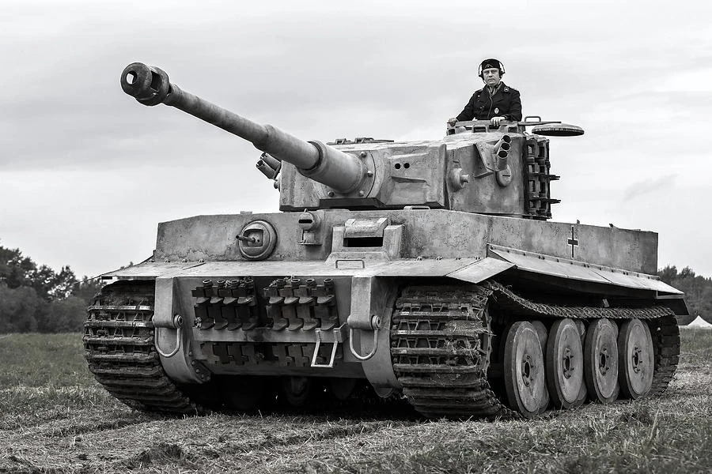

Tiger I
Giới thiệu
Tiger I là một trong những xe tăng hạng nặng nổi tiếng nhất của Đức trong Chiến tranh thế giới thứ hai. Xe được thiết kế để kết hợp lớp giáp dày với pháo 88 mm có độ chính xác và khả năng xuyên giáp cao.
Dù số lượng sản xuất không lớn, Tiger I tạo ảnh hưởng tâm lý mạnh và thường được sử dụng tại những khu vực chiến đấu quan trọng.
Lịch sử phát triển
Tiger I được phát triển từ các chương trình xe tăng hạng nặng trước chiến tranh và được đưa vào chiến đấu từ năm 1942. Những chiếc đầu tiên tham chiến gần Leningrad, sau đó xuất hiện tại Bắc Phi, Italia, Mặt trận phía Đông và Tây Âu.
Thiết kế phức tạp, trọng lượng lớn và yêu cầu bảo dưỡng cao khiến Tiger I khó sản xuất hàng loạt, nhưng hỏa lực mạnh giúp nó đặc biệt nguy hiểm khi chiến đấu phòng thủ hoặc phục kích.
Thông số kỹ thuật
| Quốc gia | Đức |
|---|---|
| Phân loại | Xe tăng hạng nặng |
| Tên đầy đủ | Panzerkampfwagen VI Tiger Ausf.E |
| Thời gian phục vụ | 1942–1945 |
| Kíp lái | 5 người |
| Khối lượng | Khoảng 57 tấn |
| Động cơ | Maybach HL230 P45 V12 |
| Công suất | Khoảng 700 mã lực |
| Tốc độ tối đa | Khoảng 45 km/h |
| Tầm hoạt động | Khoảng 110–195 km |
| Giáp | Khoảng 25–120 mm |
Vũ khí
- Pháo chính 8,8 cm KwK 36 L/56.
- Hai súng máy MG34 cỡ 7,92 mm.
- Cơ số đạn pháo thường khoảng 92 viên.
Ưu điểm
- Pháo 88 mm mạnh và chính xác.
- Giáp trước và giáp tháp pháo dày.
- Không gian chiến đấu và khả năng quan sát tương đối tốt.
Nhược điểm
- Trọng lượng lớn, khó vượt cầu và địa hình yếu.
- Tiêu hao nhiên liệu cao.
- Hệ thống truyền động và bánh chịu tải phức tạp.
- Chi phí sản xuất và bảo dưỡng cao.
Các trận đánh và chiến dịch tiêu biểu
Leningrad và Mặt trận phía Đông
Tiger I được triển khai từ cuối năm 1942 và nhanh chóng cho thấy ưu thế hỏa lực ở khoảng cách xa.
Bắc Phi và Tunisia
Một số đơn vị Tiger I tham chiến tại Tunisia, nơi pháo 88 mm gây nhiều khó khăn cho thiết giáp Đồng Minh.
Normandy và Villers-Bocage
Tiger I được sử dụng trong các trận phòng thủ tại Normandy, nổi bật trong những cuộc giao chiến ở khu vực Villers-Bocage.
Đánh giá tổng quan
Tiger I là một thiết kế mạnh ở cấp chiến thuật nhờ hỏa lực và giáp bảo vệ, nhưng không phải là phương tiện lý tưởng cho chiến tranh sản xuất hàng loạt.
Hiệu quả của xe phụ thuộc nhiều vào kíp lái, công tác bảo dưỡng và nguồn cung nhiên liệu.